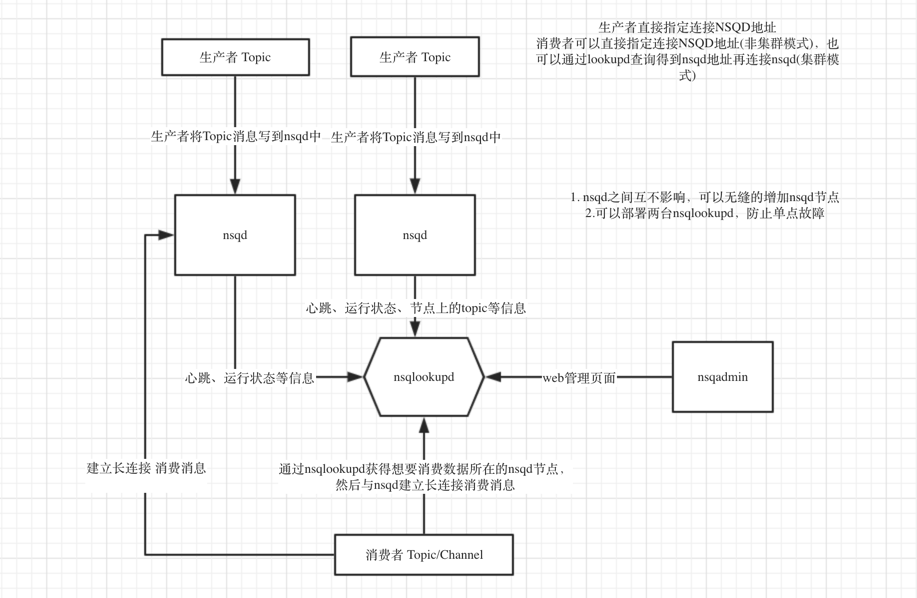

NSQ简介
NSQ 是实时的分布式消息处理平台，其设计的目的是用来大规模地处理每天数以十亿计级别的消息。NSQ 具有分布式和去中心化拓扑结构，该结构具有无单点故障、故障容错、高可用性以及能够保证消息的可靠传递的特征，是一个成熟的、已在大规模生成环境下应用的产品。
NSQ 由 3 个守护进程组成：
nsqd 是接收、保存和传送消息到客户端的守护进程。
nsqlookupd 是管理的拓扑信息，维护着所有nsqd的状态，并提供了最终一致发现服务的守护进程。
nsqadmin 是一个 Web UI 来实时监控集群和执行各种管理任务。

这篇文章介绍主要介绍nsqd的实现。
Topic与Channel
Topic与Channel是NSQ中重要的两个概念。
生产者将消息写到Topic中，一个Topic下可以有多个Channel，每个Channel都是Topic的完整副本。
消费者从Channel处订阅消息，如果有多个消费者订阅同一个Channel，Channel中的消息将被传递到一个随机的消费者。

type NSQD struct {
//一个nsqd实例可以有多个Topic
topicMap map[string]*Topic
}
type Topic struct {
name string
//一个Topic实例下有多个Channel
channelMap map[string]*Channel
memoryMsgChan chan *Message
}
//golang中goroutine之间的是通过chan来通信的，如果想要往该topic发布消息，只需要将消息写到Topic.memoryMsgChan中
//Topic创建成功后会开启一个新的goroutine(messagePump)负责监听Topic.memoryMsgChan，当有新消息时会将将消息复制N份发送到该Topic下的所有Channel中
func NewTopic(topicName string) *Topic {
t := &Topic{
name: topicName,
channelMap: make(map[string]*Channel),//该Topic下的所有Channel
memoryMsgChan: make(chan *Message, ctx.nsqd.opts.MemQueueSize),
exitChan: make(chan int),
}
//开启一个goroutine负责监听写到该Topic的消息
t.waitGroup.Wrap(func() { t.messagePump() })
return t
}
func (t *Topic) messagePump() {
var msg *Message
var chans []*Channel
var memoryMsgChan chan *Message
//取出该Topic下所有的Channel
for _, c := range t.channelMap {
chans = append(chans, c)
}
for {
//从memoryMsgChan中取出一个消息，并将消息复制N份，发送到N个Channel中
select {
case msg = <-memoryMsgChan:
case <-t.exitChan:
return
}
for i, channel := range chans {
chanMsg := NewMessage(msg.ID, msg.Body)
chanMsg.Timestamp = msg.Timestamp
err := channel.PutMessage(chanMsg)//消息写入到channel的Channel.memoryMsgChan中
}
}
}
//Channel.memoryMsgChan负责接收写到该Channel的所有消息
//创建创建Channel时会开启一个新的goroutine(messagePump)负责监听Channel.memoryMsgChan，当有消息时会将该消息写到Channel.clientMsgChan中，订阅该channel的consumer都会试图从clientMsgChan中取消息，一条消息只能被一个consumer抢到
//Channel还负责消息的可靠传递，当消息发往consumer时，Channel会记录下该消息的发送时间，如果在一定时间内(msg-timeout参数)没有接受到consumer对该消息的确认，Channel会将该消息重新写到Channel.memoryMsgChan中，再次发送给客户端。
type Channel struct {
name string //channel的名称
memoryMsgChan chan *Message
clientMsgChan chan *Message
clients map[int64]Consumer
}
func NewChannel(topicName string, channelName string）
c := &Channel{
topicName: topicName,
name: channelName,
memoryMsgChan: make(chan *Message, ctx.nsqd.opts.MemQueueSize),
clientMsgChan: make(chan *Message),
exitChan: make(chan int),
}
go c.messagePump()
return c
}
//往channel中写入消息。
func (c *Channel) put(m *Message) error {
select {
case c.memoryMsgChan <- m:
}
return nil
}
func (c *Channel) messagePump() {
var msg *Message
for {
select {
case msg = <-c.memoryMsgChan:
case <-c.exitChan:
goto exit
}
c.clientMsgChan <- msg //多个消费者会同时争抢clientMsgChan中得消息，但只有一个消费者争抢到
}
exit:
close(c.clientMsgChan)
}
要理解Topic Channel中各种chan的作用，关键是要理解golang中如何在并发环境下如何操作一个结构体(多个goroutine同时操作topic)，与C/C++多线程操作同一个结构体时加锁(mutex,rwmutex)不同，go语言中一般是为这个结构体(topic，channel)开启一个主goroutine(messagePump函数)，所有对该结构体的改变的操作都应是该主goroutine完成的，也就不存在并发的问题了，其它goroutine如果想要改变这个结构体则应该向结构体提供的chan中发送消息(msgchan）或者通知(exitchan,updatechan),主goroutine会一直监听所有的chan，当有消息或者通知到来时做相应的处理。
数据的持久化
了解数据的持久化之前，我们先来看两个问题？
- 往Topic中写入消息就是将消息发送到Topic.memoryMsgChan中，但是memoryMsgChan是一个固定内存大小的内存队列，如果队列满了怎么办呢？会阻塞吗？
- 如果消息都存放在memoryMsgChan这个内存队列中，程序退出了消息就全部丢失了吗？
NSQ是如何解决的呢，nsq在创建Topic、Channel的时候都会创建一个DiskQueue，DiskQueue负责向磁盘文件中写入消息、从磁盘文件中读取消息，是NSQ实现数据持久化的最重要结构。
以Topic为例，如果向Topic.memoryMsgChan写入消息但是memoryMsgChan已满时，nsq会将消息写到topic.DiskQueue中，DiskQueue会负责将消息内存同步到磁盘上。
如果从Topic.memoryMsgChan中读取消息时，但是memoryMsgChan并没有消息时，就从topic.DiskQueue中取出同步到磁盘文件中的消息。
func NewTopic(topicName string，ctx *context) *Topic {
... //其它初始化代码
// ctx.nsqd.opts都是一些程序启动时的命令行参数
t.backend = newDiskQueue(topicName,
ctx.nsqd.opts.DataPath,
ctx.nsqd.opts.MaxBytesPerFile,
ctx.nsqd.opts.SyncEvery,
ctx.nsqd.opts.SyncTimeout,
ctx.nsqd.opts.Logger)
return t
}
//将消息写到topic的channel中，如果topic的memoryMsgChan已满则将topic写到磁盘文件中
func (t *Topic) put(m *Message) error {
select {
case t.memoryMsgChan <- m:
default:
//从buffer池中取出一个buffer接口，将消息写到buffer中，再将buffer写到topic.backend的wirteChan中
//buffer池是为了避免重复的创建销毁buffer对象
b := bufferPoolGet()
t.backend.WriteChan <- b
bufferPoolPut(b)
}
return nil
}
func (t *Topic) messagePump() {
...//参见上文代码
for {
//从memoryMsgChan及DiskQueue.ReadChan中取消息
select {
case msg = <-memoryMsgChan:
case buf = <- t.backend.ReadChan():
msg, _ = decodeMessage(buf)
case <-t.exitChan:
return
}
... //将msg复制N份，发送到topic下的N个Channel中
}
}
我们看到topic.backend（diskQueue）负责将消息写到磁盘并从磁盘中读取消息，diskQueue提供了两个chan供外部使用:readChan与writeChan。
我们来看下diskQueue实现中的几个要点。
- diskQueue在创建时会开启一个goroutine，从磁盘文件中读取消息写到readChan中，外部goroutine可以从readChan中获取消息；随时监听writeChan，当有消息时从wirtechan中取出消息，写到本地磁盘文件。
- diskQueue既要提供文件的读服务又要提供文件的写服务，所以要记录下文件的读位置(readIndex),写位置(writeIndex)。每次从文件中读取消息时使用file.Seek（readindex）定位到文件读位置然后读取消息信息，每次往文件中写入消息时都要file.Seek（writeIndex）定位到写位置再将消息写入。
- readIndex，writeIndex很重要，程序退出时要将这些信息(meta data)写到另外的磁盘文件(元信息文件)中，程序启动时首先读取元信息文件，在根据元信息文件中的readIndex writeIndex操作存储信息的文件。
- 由于操作系统层也有缓存，调用file.Write()写入的信息，也可能只是存在缓存中并没有同步到磁盘，需要显示调用file.sync()才可以强制要求操作系统把缓存同步到磁盘。可以通过指定创建diskQueue时传入的syncEvery,syncTimeout来控制调用file.sync()的频率。syncTimeout是指每隔syncTimeout秒调用一次file.sync()，syncEvery是指每当写入syncEvery个消息后调用一次file.sync()。这两个参数都可以在启动nsqd程序时通过命令行指定。
网络架构
nsq是一个可靠的、高性能的服务端网络程序，通过阅读nsqd的源码来学习如何搭建一个可靠的网络服务端程序。
//首先是监听端口，当有请求到来时开启一个goroutine去处理该链接请求
func TCPServer(listener net.Listener) {
for {
clientConn, err := listener.Accept()
go Handle(clientConn)
}
}
func Handle(clientConn net.Conn) {
//客户端首先需要发送一个四字节的协议编号，表示客户端当前所使用的协议
//这样便于以后平滑的协议升级，服务端可以根据客户端的协议编号做不同的处理
buf := make([]byte, 4)
_, err := io.ReadFull(clientConn, buf)
protocolMagic := string(buf)
var prot util.Protocol
switch protocolMagic {
case " V2":
prot = &protocolV2{ctx: p.ctx}
default:
return
}
//成功建立连接，按照相应的协议编号去处理该链接
err = prot.IOLoop(clientConn)
return
}
}
客户端已成功的与服务器建立链接了，每一个客户端建立连接后，nsqd都会创建一个Client接口体，该结构体内保存一些client的状态信息。
每一个Client都会有两个goroutine，一个goroutine负责读取客户端主动发送的各种命令，解析命令，处理命令并将处理结果回复给客户端。
另一个goutine负责定时发送心跳信息给客户端，如果客户端订阅某个channel的话则将channel中的将消息通过网络发送给客户端。
如果服务端不需要主动推送大量消息给客户端，一个连接只需要开一个goroutine处理请求并发送回复就可以了，这是最简单的方式。开启两个goroutine操作同一个conn的话就需要注意加锁了。
func (p *protocolV2) IOLoop(conn net.Conn) error {
//创建一个新的Client对象
clientID := atomic.AddInt64(&p.ctx.nsqd.clientIDSequence, 1)
client := newClientV2(clientID, conn, p.ctx)
//开启另一个goroutine，定时发送心跳信息，客户端收到心跳信息后要回复。
//如果nsqd长时间未收到该连接的心跳回复说明连接已出问题，会断开连接，这就是nsq的心跳实现机制
go p.messagePump(client)
for {
//如果超过client.HeartbeatInterval * 2时间间隔内未收到客户端发送的命令，说明连接处问题了，需要关闭此链接。
//正常情况下每隔HeartbeatInterval时间客户端都会发送一个心跳回复。
client.SetReadDeadline(time.Now().Add(client.HeartbeatInterval * 2))
//nsq规定所有的命令以 “\n”结尾，命令与参数之间以空格分隔
line, err = client.Reader.ReadSlice('\n')
//params[0]为命令的类型，params[1:]为命令参数
params := bytes.Split(line, separatorBytes)
//处理客户端发送过来的命令
response, err := p.Exec(client, params)
if err != nil {
sendErr := p.Send(client, frameTypeError, []byte(err.Error()))
if _, ok := err.(*util.FatalClientErr); ok {
break
}
continue
}
//将命令的处理结果发送给客户端
if response != nil {
err = p.Send(client, frameTypeResponse, response)
}
}
//连接出问题了，需要关闭连接
conn.Close()
close(client.ExitChan) //关闭client的ExitChan
//client.Channel记录的是该客户端订阅的Channel,客户端关闭的时候需要从Channel中移除这个订阅者。
if client.Channel != nil {
client.Channel.RemoveClient(client.ID)
}
return err
}
func (p *protocolV2) Exec(client *clientV2, params [][]byte) ([]byte, error) {
switch {
case bytes.Equal(params[0], []byte("FIN")):
return p.FIN(client, params)
case bytes.Equal(params[0], []byte("RDY")):
return p.RDY(client, params)
case bytes.Equal(params[0], []byte("PUB")):
return p.PUB(client, params)
case bytes.Equal(params[0], []byte("NOP")):
return p.NOP(client, params)
case bytes.Equal(params[0], []byte("SUB")):
return p.SUB(client, params)
}
return nil, util.NewFatalClientErr(nil, "E_INVALID", fmt.Sprintf("invalid command %s", params[0]))
}
我们来看下NSQ中几个比较重要的命令:
- NOP 心跳回复，没有实际意义
- PUB 发布一个消息到 话题（topic)
PUB <topic_name>\n [ 四字节消息的大小 ][ 消息的内容 ]- SUB 订阅话题（topic) /通道（channel)
SUB <topic_name> <channel_name>\n- RDY 更新 RDY 状态 (表示客户端已经准备好接收N 消息)
RDY <count>\n- FIN 完成一个消息 (表示成功处理)
FIN <message_id>\n
生产者产生消息的过程比较简单，就是一个PUB命令，先读取四字节的消息大小，然后根据消息大小读取消息内容，然后将内容写到topic.MessageChan中。
我们重点来看下消费者是如何从nsq中读取消息的。
- 消费者首先需要发送SUB命令，告诉nsqd它想订阅哪个Channel,然后nsqd将该Client与Channel建立对应关系。
消费者发送RDY命令，告诉服务端它以准备好接受count个消息，服务端则向消费者发送count个消息，如果消费者想继续接受消息就需要不断发送RDY命令告诉服务端自己准备好接受消息(类似TCP协议中滑动窗口的概念，消费者并不是按照顺序一个个的消费消息，NSQD最多可以同时count个消息给消费者,每推送给消费者一个消息count数目减一，当消费者处理完消息回复FIN指令时count+1)。
func (p *protocolV2) SUB(client *clientV2, params [][]byte) ([]byte, error) { topicName := string(params[1])
channelName := string(params[2])
topic := p.ctx.nsqd.GetTopic(topicName)
channel := topic.GetChannel(channelName)
//将Client与Channel建立关联关系
channel.AddClient(client.ID, client)
client.Channel = channel
// update message pump
client.SubEventChan <- channel
return okBytes, nil
}
func (p *protocolV2) messagePump(client *clientV2, startedChan chan bool) {
subEventChan := client.SubEventChan
heartbeatTicker := time.NewTicker(client.HeartbeatInterval)
for {
//IsReadyForMessages就是检查Client的RDY命令所设置的ReadyCount，判断是否可以继续向Client发送消息
if subChannel == nil || !client.IsReadyForMessages() {
//客户端还未做好准备则将clientMsgChan设置为nil
clientMsgChan = nil
} else {
//客户端做好准备，则试图从订阅的Channel的clientMsgChan中读取消息
clientMsgChan = subChannel.clientMsgChan
}
select {
//接收到客户端发送的RDY命令后，则会向ReadyStateChan中写入消息，下面的case条件则可满足，重新进入for循环
case <-client.ReadyStateChan:
//接收到客户端发送的SUB命令后，会向subEventChan中写入消息，subEventChan则被置为nil，所以一个客户端只能订阅一次Channel
case subChannel = <-subEventChan:
// you can't SUB anymore
subEventChan = nil
//发送心跳消息
case <-heartbeatChan:
err = p.Send(client, frameTypeResponse, heartbeatBytes)
//会有N个消费者共同监听channel.clientMsgChan,一条消息只能被一个消费者抢到
case msg, ok := <-clientMsgChan:
if !ok {
goto exit
}
//以消息的发送时间排序，将消息放在一个最小时间堆上，如果在规定时间内收到对该消息的确认回复(FIN messageId)说明消息以被消费者成功处理，会将该消息从堆中删除。
//如果超过一定时间没有接受 FIN messageId，会从堆中取出该消息重新发送，所以nsq能确保一个消息至少被一个i消费处理。
subChannel.StartInFlightTimeout(msg, client.ID, msgTimeout)
client.SendingMessage()
//通过网络发送给消费者
err = p.SendMessage(client, msg, &buf）
case <-client.ExitChan:
goto exit
}
}
exit:
heartbeatTicker.Stop()
}
##参考文献
[NSQ 指南](http://wiki.jikexueyuan.com/project/nsq-guide/intro.html)
[使用消息队列的 10 个理由](http://www.oschina.net/translate/top-10-uses-for-message-queue)
[关于go同步和异步模式的疑惑](https://groups.google.com/forum/?fromgroups#!topic/golang-china/q9qClpwk5RY)